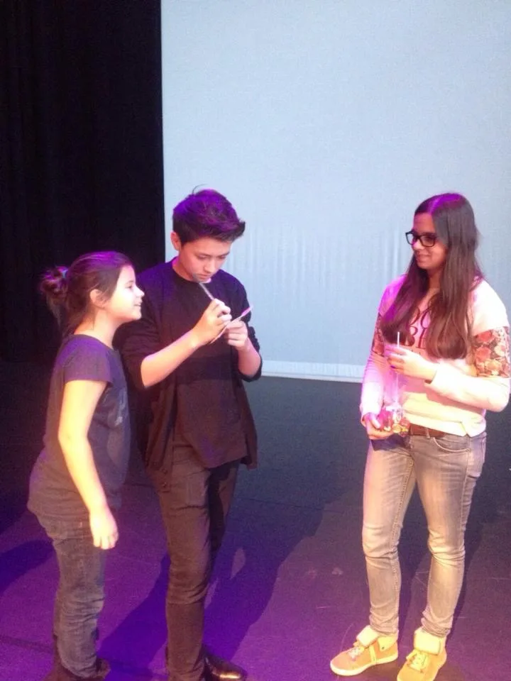
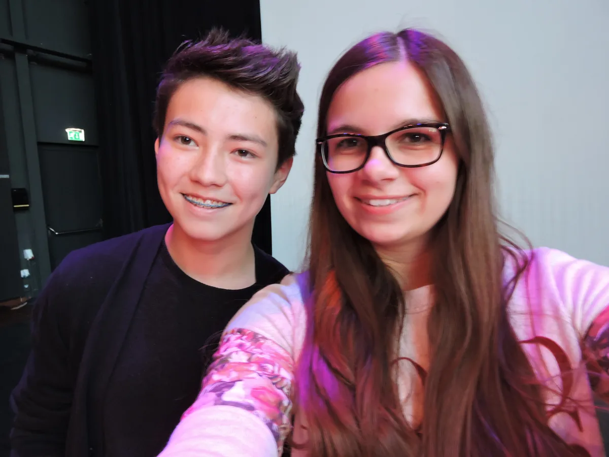
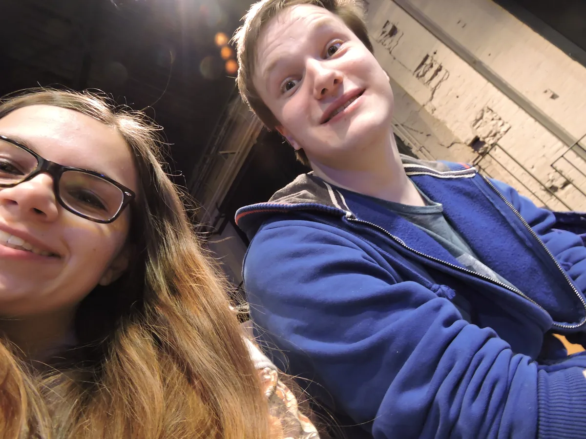

Ich habe 2011 angefangen Gitarre zu spielen. Alles begann mit meiner Yamaha F370 und dem wöchentlichen Gitarrenunterricht in der Musikschule Kiekenbeck. Mich hat das Gitarrespielen so begeistert, dass ich es jeden Tag kaum erwarten konnte, von der Schule nach Hause zu kommen und endlich wieder zu spielen.
2014 entdeckte ich Andrew Foy und damit auch Fingerstyle für mich. Damals gab es noch keine Tutorials und ich schaute mir einfach stundenlang seine Videos an und versuchte seine Arrangements nachzuspielen. Ein Jahr später traf ich ihn dann sogar persönlich auf dem Guitar Event in Dordrecht.



Besonders aufregend war es für mich auch Maria und unseren Schulchor bei unserer Aufführung zu begleiten. Ich war so aufgeregt, dass ich meine Augen gar nicht von meinem Blatt wegbekam, obwohl ich die ganze Zeit nur 4 Akkorde spielte.
Andrew und all die anderen Fingerstyle-Gitarristen spielten mittlerweile Baton Rouge Gitarren, die ich auch richtig schön fand. Und da mir die einfach zu teuer waren, habe ich mir eine Baton Rouge Ukulele zugelegt. Zu der Zeit (Anfang 2016) spielte fast niemand Fingerstyle Ukulele und ich begann, meine eigenen Arrangements nach Gehör aufzuschreiben.
Und dann nahm ich noch zwei, drei Tutorials auf und lud sie auf meinem YouTube-Kanal hoch. Einerseits, weil ich wirklich Lust darauf hatte. Andererseits, weil ich dachte: „Vielleicht entdeckt mich Baton Rouge ja auch und ich bekomme eine Gitarre gesponsert!“
Naja und dann vergingen ein paar Monate und ich hatte meinen YouTube-Kanal schon vollständig vergessen. Ich kam irgendwann mal aus Zufall darauf und hatte plötzlich über 20.000 Aufrufe und 500 Abonnenten. Und da beschloss ich, weiterzumachen. So entstand „awiealissa“.
Und tatsächlich war Baton Rouge die erste Firma, die sich bei 1.000 Abonnenten bei mir meldete. Leider bekam ich keine Gitarre, sondern (natürlich passend zu meinem YouTube-Kanal) 3 Ukulelen. Aber auch davon war ich total aus dem Häuschen:
Einige Zeit später wurde ich zu einem Fotoshooting eingeladen. Meine Fotos waren beim Musikfest in Österreich auf einem großen Banner zu sehen (unter anderem auch auf der Bühne hinter Taimane Gardner, einer sehr berühmten Ukulelespielerin) und ich sehe sie auch jetzt noch ab und an mal im Newsletter.
In den nächsten Jahren wurde ich auch von anderen Firmen mit zahlreichen Ukulelen ausgestattet. Das war natürlich extrem cool, weil ich einfach so viele verschiedene Marken, Größen und Formen ausprobieren konnte.
Was ich auch ganz spannend fand, waren meine Erfahrungen als Ukulele-Lehrerin. Ich habe zum Beispiel einem kleinen, sechsjährigen Jungen aus Thüringen über Skype geholfen, meine Cover nachzuspielen und ich hatte auch eine Schülerin in Toronto.
Und 2019 hatte ich mein Ziel dann auch endlich erreicht: Ich bekam die Baton Rouge AR61S/ACE zugeschickt.
Mittlerweile ist meine Instrumentensammlung auf 4 weitere (klassische) Gitarren von La Mancha (die gehören auch zu Baton Rouge) angewachsen. Seit ungefähr einem Jahr nehme ich als Freelancer Videoprojekte für sie auf.
Ukulelen habe ich in unserer Wohnung wirklich sichtbar nur noch 2. Und das hängt mit der anderen Seite der Medaille zusammen:
Denn so cool und besonders die vielen Erfahrungen auch waren, die ich durch meine YouTube-Videos sammeln durfte – ich verlor nach und nach die Freude am Musizieren.
Wenn man viele Abonnenten hat (und es sind mittlerweile 34.000), steht man immer unter Druck, neuen Content liefern zu müssen. Ich habe nicht mehr das gespielt, worauf ich Lust hatte, sondern nur das, was die Leute hören wollten. Viele Videos haben mich in der Produktion sehr frustriert.
Naja und bei 34.000 Abonnenten hat man eben auch Hater und es gab einige Kommentare, die mich immer noch sehr verunsichern. Mir wurde z. B. gesagt, dass ich meine Hand beim Gitarrespielen nicht professionell halte. Das hat sich bei mir so eingebrannt, dass ich lange gar nicht mehr geübt habe, weil ich nur noch auf meine Hand geschaut habe.
Was ich nun gelernt habe, ist folgendes:
Und in diesem Sinne verabschiede ich mich von Social Media und YouTube und mache wieder einfach das, was mir damals immer so viel Freude gemacht hat.